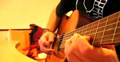

- 1
- 2
- 3
- 4
- 5
- 6
Mike Portnoy’s Super Band 四大神技乐手联盟中国巡演上海站
2012-10-15 11:36:35 来源：大麦网 作者：xiaofeng 次数：1203040
票价：预售290元 现场390元 VIP990元（签名+合影+海报） 购买见大麦网
Mike Portnoy, Billy Sheehan, Tony MacAlpine and Derek Sherinian（PSMS）四位在各自领域堪称顶级的乐器大师将联合起来于金秋开展欧洲和亚洲巡演。当此消息在世界著名前卫金属乐队Dream Theater前主创兼鼓手的Mike Portnoy的个人官方网站一经公布便引起广泛关注和回应。
今年1月，作为Mike Portnoy最新计划的PSMS，参加了美国著名乐器展NAMM上由Guitar Center杂志主办的Drum Off和国际知名品牌Sabian举行的Sabian live两场活动。因此带来的狂热反响让乐队兴奋的同时也决定开展巡演，当然最开心的莫过于各路乐迷。
所谓行家联手，天下无敌，四人将精心整合一系列各自独奏专辑、彼此于先前的合作作品以及翻弹优秀经典的乐器作品作为此次这超级四人组合的巡演元素，至于这份清单上会有多少Dream Theather和Mr. Big的红歌热曲，让我们拭目以待；而现场琴鼓争鸣，飙音炫技，各显风流之景不难想象。
就像Portnoy所说，“当有这样一组阵容出现在我脑海里并且将它付诸行动，这一定会是个前所未有的音乐体验，我们都像打被打了鸡血，我相信乐迷也是！我们已迫不及待的想要与大家一起感受这妙不可言的演出。”
听起来乐队名字PSMS是个过于简单没特点的合成，但将其拆解开，便是四位成员的名字且哪个都是当今国际金属乐坛响当当的大佬，不妨再依次了解下他们：
1）万点鼓鸣前卫震天之 Mike Portnoy
MP出生于纽约长滩长岛上一个犹太人家庭，受在当地做摇滚电台节目主持人的父亲影响，从小耳濡目染大量摇滚乐，于是开始自学打鼓，随后进入中学学习音乐理论也加入了当地的一些乐队，他们中的两个还发布了独立专辑，直到18岁那年获得伯克利音乐学校的奖学金，MP离开这些乐队只身前往波士顿，并与同窗好友John Petrucci, John Myung组建了前卫金属史上学院派典范Dream Theater。
MP在个人官网中说自己是个不折不扣的强迫症患者，一旦为某事着迷，便不会随便待之，所以不难想象当他喜欢一个乐队，他会去收集与之相关的所有记录，喜欢一部电影便去看这导演的其他电影甚至买回所有作品，以至于他不得不在房子一侧打造一个“梦剧院博物馆”作藏馆；所以也不难理解他决定离开工作25年的DT以做调整，打算代替已故鼓手The Rev为Avenged Sevenfold乐队打鼓的思绪。
虽然最后两边都不着调，MP却总是很忙碌，在DT时除了打鼓还包揽了大部分歌词创作，对外是乐队发言人并协调与乐迷之间的关系，虽然他不止一次表示更希望大家和他谈论其他乐队、电影或者他喜欢的拳击运动而不是他的个人生活或这和DT相关；在DT期间，MP还组建了诸多摇滚乐队，与诸多世界著名乐手合作。
在其职业生涯中，获奖无数，其中有26个就来自Modern Drummer现代鼓手读者票选：1994年 Best Up&Coming Talent（最佳后起之秀）；1995-2006年连续12年 Best Progressive Rock Drummer（最佳前卫摇滚鼓手）；7次 Best Recorded Performance（最佳录音表演）贡献于7张DT专辑；2000年和2002年2度 Best Clinician（最佳实践者）；2000年和2002年2度 Best Educational Video/DVD（最佳教学视频/DVD）；2004年 Hall of Fame Inductee（加入摇滚名人堂），同时也是第二位（第一位是Rush的鼓手Neil Peart）在37岁正式进入现代鼓手名人堂的年轻鼓手，也是目前名人堂中最年轻的一位；2009年 在Rhythm Magazine节奏杂志10月刊的有史以来50位顶级鼓手排名中位列第5；2010年7月14日 Metal Hammer Golden God Award for Best Drummer获得金属音锤杂志金神奖最佳鼓手奖；2010年 Drumies Award for Best Progressive Rock drummer在对全世界6500位鼓手表决中，获得DRUM！鼓杂志鼓手鼓手奖之最佳前卫摇滚鼓手奖；2011年4月20日 Revolver Golden God Awards for Best Drummer Award因与A7F乐队的合作，获得左轮手枪杂志金神奖最佳鼓手奖；2011年7月 DRUM!Magaummer of the year Award" and "Metal Drummer Award"获得鼓手杂志年度鼓手奖金属鼓手奖。
2007年11月，这位鼓技卓然的大师率DT来到中国，变化多端的鼓点震撼了每一位到场的专业鼓手和乐迷，时隔4年，再度挂帅，顶级阵容，必定威震京沪。
2）四弦贝斯低音撼地 Billy Sheehan
打小认为贝斯是乐队中最重要乐器的贝斯大师BS，曾学过爵士鼓，也敲过钢琴键盘，拨过吉他琴弦，受到Jimi Hendrix影响，在无门无师，仅凭唱片和收音机的环境下学起了贝斯，并以他灵巧的轮指弹奏、双手点弦、迅速三指运指及花哨的solo，改变了当今贝斯的演奏方式，称得上是贝斯大师中的大师。
BS大师获得5届 Best Rock Bass Player readers' poll from Guitar Player Magazine吉他手杂志读者票选最佳摇滚贝斯手；5届 日本重金属杂志Burrn读者票选“最佳贝斯手”以及史无前例的连续14届 日本音乐杂志Player Magazine读者票选“最佳贝斯手”；因其自成一派的“Lead bass”演奏技法，这是种了不起的让人惊叹的贝斯solo演奏技法，相似技法的还有已故Metallica乐队贝斯手Cliff Burton，因一些限制，此技法已濒临失传。
80年代初，BS曾经客串英国著名硬摇乐团UFO贝斯手，之后组建Talas这个概念性前卫金属乐团。85年，BS和吉他教父Steve Vai、鼓王Gregg Bisonette一起被前Van Halen主唱David Lee Roth招募，录制了两张专辑。89年和吉他神童Paul Gilbert、摇滚歌手Eric Martin共组Mr. Big乐团，更以一首“to be with u”红遍世界五大洲。
在BS个人个人作品中,，除了邀请如Steve Vai等客串，其多才多艺的技能还体现在一人包办了从主唱、吉他到贝斯的工作，精彩的乐器表现，加上BS令人惊喜的动人歌声，表现可圈可点。想亲临感受BS的疯狂？那么11月现场见，一般人我不告诉她。
3）八弦吉他炫指琴魔 Tony Macalpine
现年51岁的Tony Macalpine是硬摇'重金属领域为数不多的黑人吉他大师，同时是一位出色的键盘演奏家，5岁练钢琴，12岁学吉他，在斯普林菲尔德音乐学院学习古典乐，再到哈特福德大学学习多元音乐知识，有着深厚的音乐底蕴。在其音乐生涯里，发行了多张录音室专辑，大部分脱胎与肖邦练习曲，以向这位伟大的作曲家致敬。TM参与过多支乐队，与Vinnie Moore、Mark Boals、Steve Vai等众多摇滚音乐明星有不同程度合作，参与G3音乐会让他为广大国内乐迷熟悉。
TM也以摇滚吉他速弹风格对新古典金属产生过巨大的影响，不仅是他的吉他演奏还是键盘表演都融合了古典、爵士、放克、硬摇和重金属元素。世界最大的音乐在线网站Allmusic主编Jason Ankeny称其为艺术大师。
4）十指键盘黑白狂舞 Derek Sherinian
DS5岁开始学习钢琴，在索科尔高中毕业后，也因获得伯克利音乐学校的奖学金而来到波士顿，他遇到了的室友，即日后Megadeth的吉他手也是西伯里亚乐团音乐总监的Al Pitrelli。在Pitrelli的引荐下他加入了前Jimi HendrixBand of Gypsies乐队鼓手的巡演阵营，之后加入摇滚传奇人物Alice Cooper为其白金唱片Thrash所进行的超过250场巡演队伍，为其离开伯克利之后最大的转折。我们的休克摇滚老兄送给DS一个绰号“键盘手里的卡里古拉”，可见其键盘演奏的凶猛和华丽。1991年，巡演结束，在巡演伙伴鼓手Eric Singer的建议下为著名摇滚乐队Kiss做Revenge复仇巡演幕后键盘。
真正的转变是在DS接受同窗及好友,John Petrucci, John Myung, Mike Portnoy三位Dream Theater成员的召唤下，代替Kevin Moore加入为专辑Awake进行的"Waking up the world"唤醒这世界巡演。不同于在伯克利学到的东西，DS在巡演中顶住压力做出调整以适应乐队，1994年，正式成为DT一员，4年间，与乐队一起完成了3张专辑和2场世界巡演，直到因为音乐理念和风格原因1999年1月由Jordon Rudess接替了他的位置。当然他始终与保持着良好的关系，也助阵DT的一些演出。
新闻排行
- 01教你如何弹好吉他-合理的安排你
- 02乐理自修大法——扒带初级篇
- 03扒谱简易教程（一）
- 042012摇滚演唱会重磅第一弹朋克天团2012摇滚演唱会重磅第一弹朋克天团
- 05[原创]我来回答，什么是推弦
- 06关于吉他调音问题的深究
- 07乐理自修大法——扒带提高篇
- 08再谈扒带之——如何确定歌曲的调式
- 09扒谱简易教程（二）
- 10我也要扒带（实践篇）
热点视频
-
Rolling In The Deep
21261人观看 -

超好听木吉他《加勒比海盗》
21261人观看